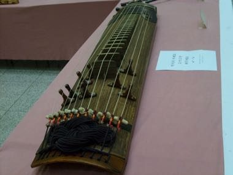

Home / Classical Worlds / Japan and Korea
Encyclopedia ID 1453
Geomungo
Also known as 거문고 · six-string black-crane zither

Pluck and strike six silk strings with a bamboo plectrum over 16 raised frets, following falling notes in the deep, resonant style of the geomungo.
Heritage note
Part of the living heritage of South Korea.
Origins
Usually placed in the era of Classical Worlds (about 1000 BCE to 500 CE), although its exact origins are uncertain, within the cultural world of Japan and Korea.
Sources
Related entries


String Marionette Theatre
Czechia · Performance and storytellingPlay preview · in the Story & Theatre of the World app
Kathputli string puppets
India · Performance and storytellingPlay preview · in the Story & Theatre of the World app
Valiha tube zither
Madagascar · Musical instrumentsPlay preview · in the Zithers & Harps of the World app
More from South Korea


Bojagi
South Korea · Crafts and making

Dalgona
South Korea · Dexterity and skill games
Dougong Bracket Stacking
China +2 · Puzzles and mind games